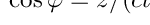

|
Fnm
..
|


All Classes Namespaces Files Functions Variables Typedefs Enumerations Enumerator Macros Modules Pages
|
Fnm
..
|
Fast Nearfield Method interfaces and implementations. More...
Classes | |
| class | Aperture |
| Aperture class. More... | |
| struct | ApertureData |
| Forward-declare ApertureData. More... | |
| struct | FocusingTypeNS |
| struct | sysparm_t |
| Sysparm structure. More... | |
Typedefs | |
| typedef FocusingTypeNS::Value | FocusingType |
Functions | |
| template<class T > | |
| std::complex< T > | CalcHz (const T &s, const T &l, const T &z, const T &k, const T *uxs, const T *uweights, const size_t nUs, const T *vxs, const T *vweights, const size_t nVs) |
| template<class T > | |
| int | CalcCwFieldRef (const ApertureData< T > &data, const T *pos, const size_t nPositions, std::complex< T > **odata) |
| template<class T > | |
| void | CalcCwField (const ApertureData< T > &data, const T *pos, const size_t nPositions, std::complex< T > **odata) |
Fast Nearfield Method interfaces and implementations.
| typedef FocusingTypeNS::Value FocusingType |
| void fnm::CalcCwField | ( | const ApertureData< T > & | data, |
| const T * | pos, | ||
| const size_t | nPositions, | ||
| std::complex< T > ** | odata | ||
| ) |
Naive integral, no re-use of parts and many abcissa are needed when projection is far away from rectangle
| data | |
| pos | |
| nPositions | |
| odata |
| int fnm::CalcCwFieldRef | ( | const ApertureData< T > & | data, |
| const T * | pos, | ||
| const size_t | nPositions, | ||
| std::complex< T > ** | odata | ||
| ) |
Spatial impulse response computed at the positions pos for a frequency f0. The frequency f0 as well as the positional information for the aperture is contained in the data structure.
^
|
+-----+-----+-----------+ (x,y)
| | | |
+-----+-----+-----------+
| | | |
| | | |
| | | |
+ o-----+-----------+---->
| | |
hh | | |
| | |
+-----+-----+-----------+
hw(Scalar reference implementation)
| data | Structure holding element positions and f0 |
| pos | Positions |
| nPositions | # of positions |
| odata | complex output |
| std::complex<T> fnm::CalcHz | ( | const T & | s, |
| const T & | l, | ||
| const T & | z, | ||
| const T & | k, | ||
| const T * | uxs, | ||
| const T * | uweights, | ||
| const size_t | nUs, | ||
| const T * | vxs, | ||
| const T * | vweights, | ||
| const size_t | nVs | ||
| ) |
Field above a corner of an element with dimensions  and  computed using Gauss-Legendre integration
computed using Gauss-Legendre integration
Reference implementation, see Rapid calculations of time-harmonic nearfield pressures produced by rectangular pistons, J. McGough, 2004
| s | width (x-dimension) |
| l | height (y-dimension) |
| z | distance to element |
| k | wave-number |
| uxs | abcissa coordinates for x-coordinate |
| uweights | weights for x-coordinate |
| nUs | number of x-coordinates |
| vxs | abcissa coordinates for y-coordinate |
| vweights | weights for y-coordinate |
| nVs | number of y-coordinates |
 1.8.8
1.8.8